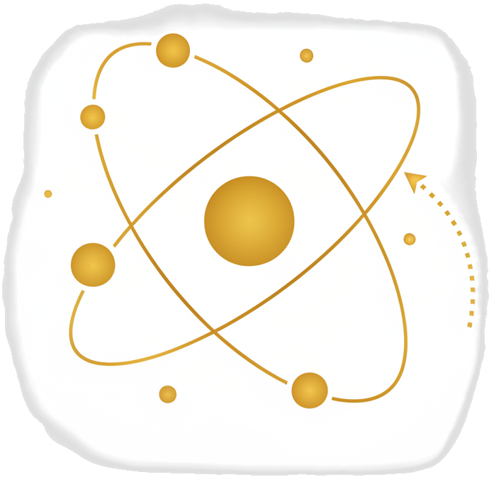

Meet Aura
With over 15 years of experience, Aura Celestial connects the ancient wisdom of the cosmos with the challenges of modern life. She believes that astrology is a powerful tool for self-discovery and empowerment, helping you navigate your path with clarity and confidence.
Readings Offered
Natal Chart Reading
A deep dive into your birth chart, revealing your core personality, strengths, and life's purpose. (60 mins)

Transit Reading
Understand the current planetary influences on your life and how to best navigate the upcoming months. (45 mins)
Synastry (Couples)
Explore the dynamics of your relationship with a partner through chart comparison. (75 mins)
Book Your Cosmic Consultation
Ready to align with your highest self? Select a reading and find a time that works for you. All readings are conducted online via video call.
View Calendar & BookWords from the Cosmos
"Aura's reading was incredibly insightful and accurate. I feel so much more clear about my path forward. It was a truly magical experience!"— Jessica M.
"I was skeptical at first, but the synastry reading was spot on for my partner and I. It gave us a new language to understand each other."— David R.